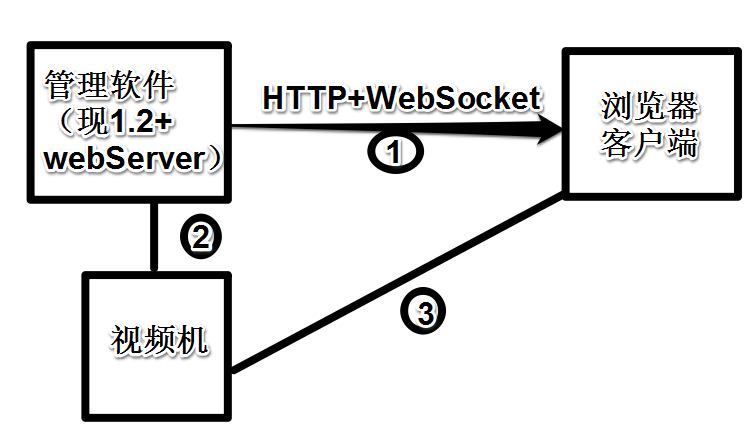

多客户端同时访问和视频联动弹窗基本实现方案——光纤安防产品管理软件
tags: 奥源 B/S 视频联动
下面方案的实现前提
- B/S模式，浏览器访问，可以不兼容IE6
- 新功能与管理软件1.2打包在一起，即新功能在管理软件1.2的基础上扩展开发
- 视频功能确认可以开放，一般为一下两种方式
- 开放流媒体接口，可以每个防区方便的绑定视频流媒体通道号码(即URL标识)
- 第三方视频联动提供更加友好的二次开发接口，支持浏览器访问（可以接受插件模式）
基本的软件部署形态

说明，对需求和视频方面理解尚浅，不妥之处后面更改
- 1.打开管理软件，设置防区，包括设置每个防区对应的视频联动URL，
重点，这个URL对应6条目的视频联动流媒体URL
- 2.浏览器端需要输入用户名密码，但暂时没有必要做权限管理
- 3.浏览器端访问，回设防区报文暂时只有防区部署于撤销部署
- 4.浏览器访问登陆后，会同步防区数目和状态，历史告警
- 5.当管理软件有告警信号产生，通过webSocket及时的推送给浏览器客户端
- 6.当有告警信号产生时，浏览器通过对应防区对应的视频流媒体URL播放即时画面
疑问
- 是否提供波形（音频文件访问和及时波形）播放功能
- 是否考虑以后扩展其他的设置接口（比如算法参数）
- 是否只管理一个区域，而不是N区域集控
- 视频数据的传输访问流程是如何的
- 浏览器端的电子地图是同步管理软件1.2的地图位置还是重新设置
重点，视频的传输具体是如何设计的，看需求说明书，有几条TCP/IP通路，据我之前的了解，海康的视频机提供了流媒体的URL，个人认为我们只设置防区绑定对应摄像头流媒体URL比较好，具体还看相应研究人员的研究成果，查看其开发包提供的方案
个人建议开发技术
1 管理软件1.2扩展部分
- 防区与视频联动URL的绑定设置
- 历史告警保存
- 防区位置信息的收集保存（如果需要）
调研管理软件1.2的防区位置信息是否已经保存或者可以保存
2 新加webServer部分
- 前端
- 调研google静态地图的API（前端）
- 图片切分（后端）
- 地图描点（地波）
- 弹框制作（视频）
- 描点移动
- 地图画边线框（周界）
- 登陆界面
- 历史报警界面
- 告警图表（是否需要）
- 后端
- webserver的选择（bottle或者Tornado）
- 数据库（看后期需要）SQLite
- 图片切片
- 防区信息Handler
- 告警历史Handler
- 登陆验证
- 即时状态保持与推送
总结
- 前端工作相对多，但多数技术曾经接触过
- goole static map （管理软件2.0使用过）
- 前端波形查看-若需要（管理软件2.0使用过）
- 报表
- websocke
- 海康流媒体视频（做管理软件2.0调研过）
- 建议与V1.2做在一起
- 建议先定视频联动技术方案